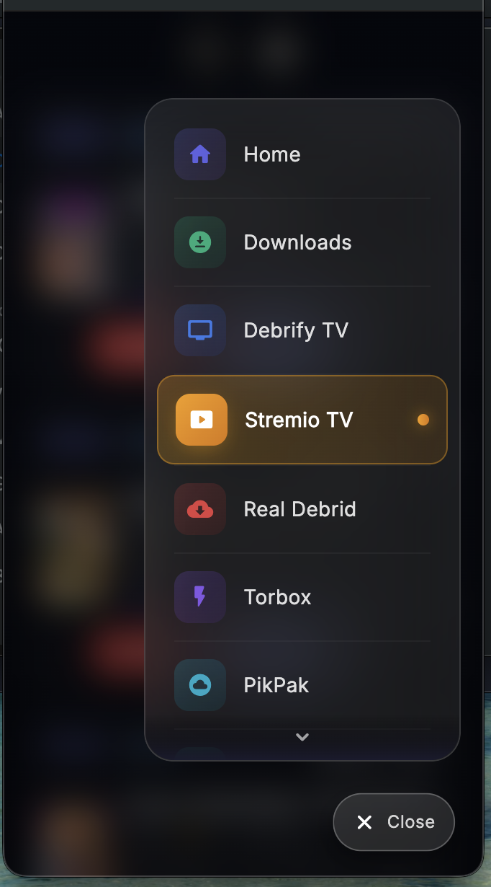
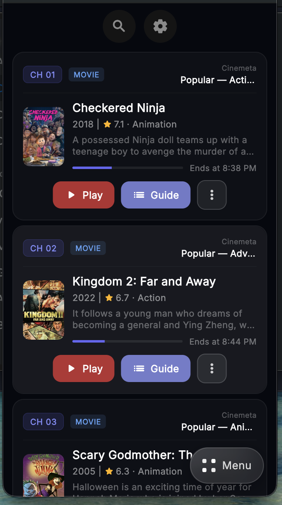
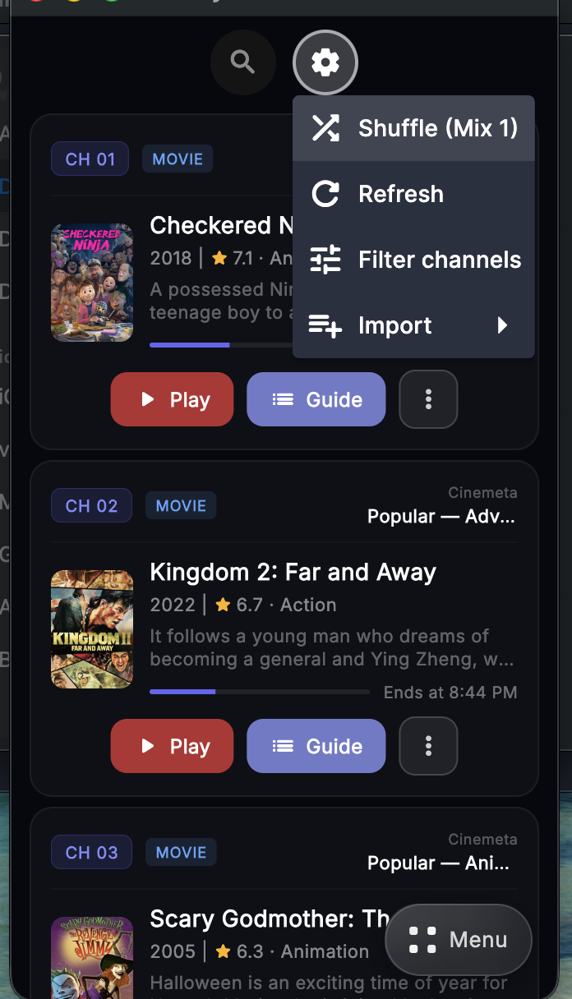
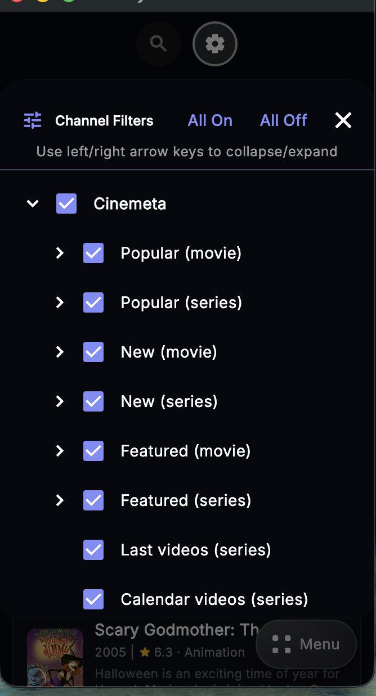

Using Stremio TV
Start from the Stremio TV tab, then watch the current item or browse the guide for the channel you want.
1
Open Stremio TV
Use the main navigation to switch into Stremio TV. This opens the channel-based view powered by your installed and imported catalogs.

Open the Stremio TV tab from the main menu
2
Browse the channel rows
Each channel row shows the current item, its metadata, and the channel timing. Use Play to start the current item or Guide to open the channel guide.
Play current item
Open guide
Channel menu

Each catalog becomes a rotating TV-style channel
3
Use the top menu
The top action menu gives you the main Stremio TV controls. This is where you can shuffle the lineup, refresh channels, filter visible channels, or import new catalogs.
Shuffle
Refresh
Filter channels
Import

Main controls for the Stremio TV screen
4
Filter the visible channels
Use Filter channels to choose which addon catalogs and channel groups appear. This makes it easier to hide channels you do not want in the lineup.
Enable or disable channels
Group by addon
Quick all on/off

Control which channels show up in the lineup